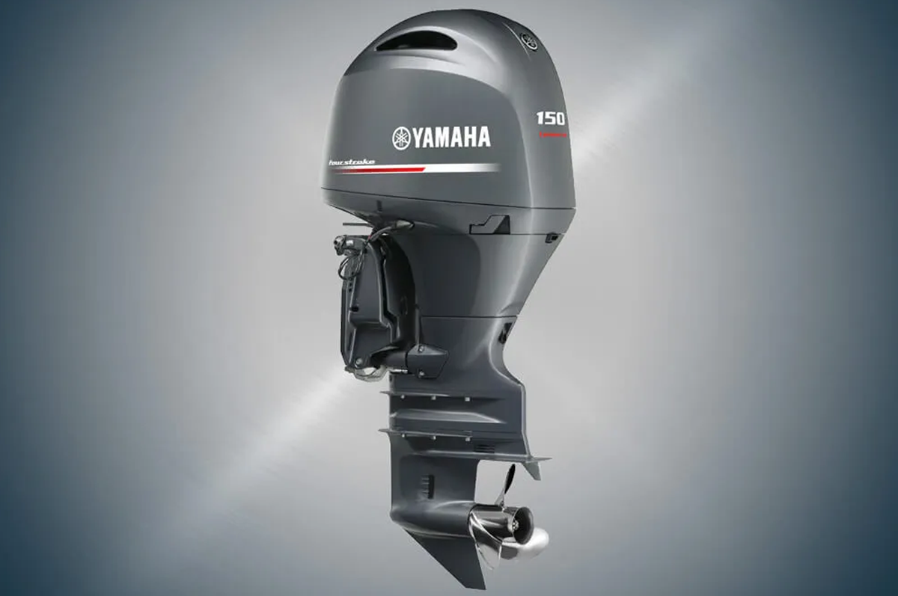
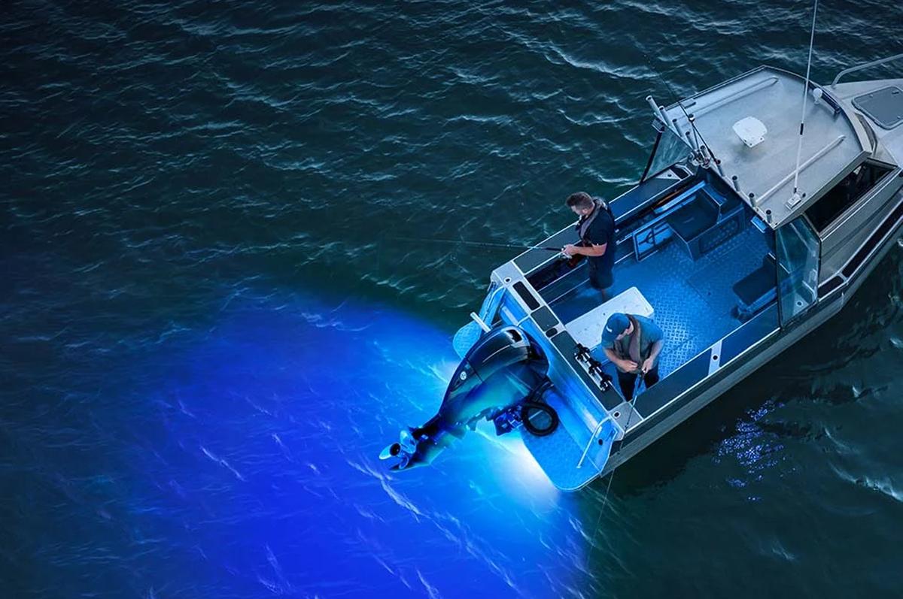

Our operation relies on a world-class, commercial-grade platform built specifically to handle the challenging currents and steep drop-offs of the Visayan Sea.
01
Extreme Boats 5.7M Extreme Game King
The Vessel
The platform uses a New Zealand-built Extreme Boats 5.7M Extreme Game King. Its aluminum hull,
enclosed hardtop, deck layout, and offshore-oriented design support private fishing trips that
require stability, protection, and practical working space.

02
2026 Yamaha F150FETX Four-Stroke Outboard
Power & Electrical Support
The vessel is powered by a Yamaha F150FETX four-stroke outboard. The onboard setup also includes
a 2 × 100AH battery system and a 700W solar power generator for supporting electronics, charging,
and selected fishing equipment during charter operations.
03
Garmin ECHOMAP UHD2 92cv + GT51M-TM
Sonar & Structure Reading
The electronics setup uses a Garmin ECHOMAP UHD2 92cv head unit paired with a GT51M-TM transducer.
This supports depth reading, structure scanning, and route assessment around channels, drop-offs,
reef edges, and fishing zones.

04
400W Underwater Blue Light System
Night Fishing Support
For selected night sessions, the vessel can use an underwater blue light system to support
nocturnal fishing strategy. This setup is intended for night operations where bait activity,
visibility, and controlled light placement are part of the fishing plan.